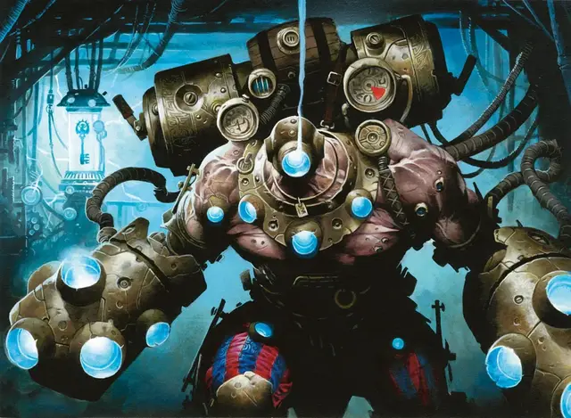

Циклоп Нивикса
Nivix Cyclops
Большой Великан, без мировоззрения

Класс Доспеха 14 (полулаты)
Хиты 115 (10к10 + 60)
Скорость 30 футов
| мод | спас | ||
|---|---|---|---|
| СИЛ | 24 | +7 | +9 |
| ЛОВ | 9 | −1 | −1 |
| ТЕЛ | 22 | +6 | +6 |
| мод | спас | ||
|---|---|---|---|
| ИНТ | 7 | −2 | −2 |
| МДР | 10 | +0 | +3 |
| ХАР | 9 | −1 | −1 |
Иммунитет к урону психическая энергия, яд
Иммунитет к состояниям испуг, истощение, окаменение, отравление, очарование, паралич
Чувства тёмное зрение 60 футов, пассивное Восприятие 10
Языки Общий, Великаний
Опасность 8 (3900 опыта)
Бонус мастерства +3
Особенности
Сопротивление магии. Циклоп совершает с преимуществом спасброски от заклинаний и других магических эффектов.
Действия
Мультиатака. Циклоп совершает две атаки Ударом.
Удар. . Рукопашная атака оружием: +10 к попаданию, досягаемость 10 фт., одна цель. Попадание: 23 (3к10 + 7) дробящего урона.
Реакции
Придание сил заклинанием. Сразу же после того, как существо наложит заклинание 1-го уровня или выше в пределах 120 футов от циклопа, циклоп может переместиться на расстояние, вдвое превышающую его скорость, не провоцируя атак. После чего он может совершить одну атаку Ударом по выбранной им цели.
Описание
Циклопы [cyclops], подобные описанным в «Бестиарии», встречаются в основном среди кланов Груулов. Они — силы природы, и хотя их время от времени вербуют в Легион Боросов, их никогда нельзя по-настоящему укротить.
Циклопы служат лиге Иззетов охранниками мастерских, личными защитниками и тяжелыми рабочими. Они носят миззиевые доспехи, чтобы свести к минимуму травмы в результате несчастных случаев в лаборатории, поршневые рукавицы, чтобы увеличить их силу для подъема и ударов, и телескопические шлемы, чтобы свести к минимуму недостатки их монокулярного зрения. Их иногда называют моноклонами или циклопами Нивикса, по названию гильдии Иззетов.